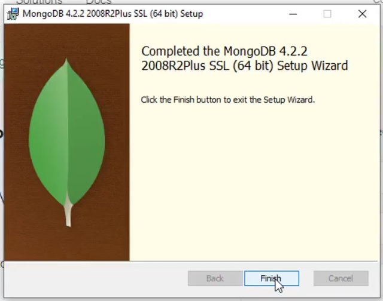
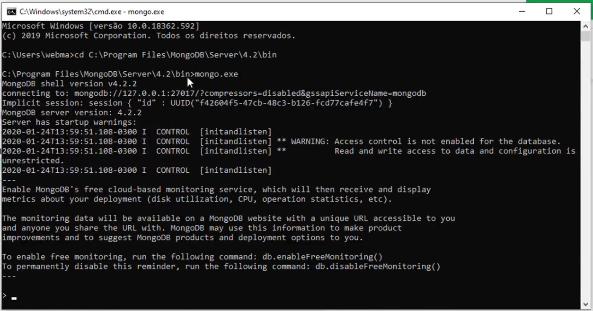

Slide 8 Bancos de Dados NoSQL
8.1 O que São Banco de Dados NoSQL ?
São Sistemas de Gerenciamento de Banco de Dados (SGBDs) que tem suas Restrições do modelo Relacional FLEXIBILIZADAS.
- DESNORMALIZADOS;
- SEM RESTRIÇÃO DE INTEGRIDADE;
- MODELO TRANSACIONAL MAIS FLEXÍVEL
8.2 Vantagens do uso dos SGBDs NoSQL
Surgiram para resolver problemas encontrados nos SGBDs Relacionais:
- Processamento;
- Paralelismo;
- Custo;
8.3 Tipos de SGBDs NoSQL
- Chave-Valor (KVP);
- Colunas Ordenadas;
- Orientados a Documentos;
- Orientados a GRAFOS;
8.3.1 SGBDs NoSQL tipo Chave-Valor (KVP)
São utilizados em aplicações WEB para armazenahr sessões de usuário, fazer cache de dados temporários e Filas de Mensagens. Exemplo: REDIS
Altíssimo Desempenho: Acesso direto por chave (lookup O(1)); Roda na RAM; REDIS
Escalabilidade Horizontal: Fácil de adicionar nós (clusterização).
Simplicidade de Modelagem: O Código-Valor ; Não exige JOINS ou relacionamentos;
Felxibilidade de Dados: STRING, JSON, Listas e HASHs
8.3.2 SGBDs NoSQL tipo Colunares (Colunas Ordenadas)
Utilizados em aplicações de grande volume de dados não estruturados como IoT, Redes Sociais e Log de Eventos. Exemplos: Cassandra, BIG Table (Google) e Apache HBASE (plugin Postgres).
Alta Performance Seletiva: Permitem ler apenas as colunas necessárias, ao invés da linha inteira;
Escalabilidade Horizontal: Projetados para rodar em clusters distribuídos;
Tolerância a Falhas: Replicação automática dos dados;
Felxibilidade de Esquemas: Não exigem estrutura fixa;
Otimizados para dados não-estruturados (BIG DATA): Suportam Petabytes de dados; Suportam milhões de operações por segundo;
8.3.3 SGBDs NoSQL tipo suporte a Documentos (JSON)
Os bancos NoSQL orientados a documentos — como o MongoDB — armazenam dados em formato JSON/BSON, o que traz vantagens importantes em relação aos SGBDs relacionais, dependendo do cenário. Aplicações Web e APIs; e-commerce. Exemplo Clássico: MongoDB
No caso do MongoDB, o mesmo utiliza JavaScript no lugar do SQL;
Flexibilidade de esquema (schema-less): Não exige estrutura rígida de tabelas Cada documento pode ter campos diferentes;
Estrutura próxima do mundo real: (JSON) Dados organizados em documentos hierárquicos Evita várias tabelas e JOINs;
Melhor desempenho em leituras complexas: Dados relacionados ficam no mesmo documento; Reduz necessidade de JOINs (que são custosos no relacional)
8.3.4 SGBDs NoSQL tipo GRAFOs:
São muito úteis por natureza em Redes sociais, Sistemas de Recomendação, Detecção de Fraude, Logística e rotas e Interação de dados entre LLMs. Exemplo: Neo4J.
Modelagem natural de relacionamentos: Relações são primeiros cidadãos (arestas) Não precisam de tabelas intermediárias (tabelas de junção);
Alta performance em consultas de relacionamento: Traversal (percorrer o grafo) é muito rápido; Evita múltiplos JOINs (custosos no relacional).
Consultas mais expressivas: Linguagens como Cypher (do Neo4j); Permite escrever consultas complexas de forma simples.
Muito Usado em I.A. pois se dá muito bem com LLMs.
8.3.4.1 Convertendo uma tabela SQL para o modelo de Grafos utilizando a linguagem Cypher
| SQL | Neo4j (Cypher) |
| ----------- | ------------------------- |
| DATABASE | Database (multi-db Neo4j) |
| TABLE | Label (rótulo de nó) |
| ROW | Node |
| COLUMN | Property |
| PRIMARY KEY | Constraint UNIQUE |
| INDEX | Index |8.3.4.2 Tabela Pessoas declarada em SQL
CREATE DATABASE IF NOT EXISTS pessoasdb
CHARACTER SET utf8mb4
COLLATE utf8mb4_0900_ai_ci;
USE pessoasdb;
-- 2) (OPCIONAL) CRIAR USUÁRIO LOCAL E CONCEDER PERMISSÕES
-- Troque 'MinhaSenhaForte' por uma senha segura
CREATE USER IF NOT EXISTS 'pessoas_user'@'localhost' IDENTIFIED BY 'MinhaSenhaForte';
GRANT ALL PRIVILEGES ON pessoasdb.* TO 'pessoas_user'@'localhost';
FLUSH PRIVILEGES;
-- 3) TABELA 'pessoas' COMPATÍVEL COM O MODELO SQLAlchemy
-- - cpf: chave primária (String(14))
-- - nome, endereco, foto: TEXT
-- - data_nascimento: DATE
CREATE TABLE IF NOT EXISTS pessoas (
cpf VARCHAR(14) NOT NULL,
nome TEXT NOT NULL,
endereco TEXT NOT NULL,
data_nascimento DATE NOT NULL,
foto TEXT NULL,
PRIMARY KEY (cpf)
) ENGINE=InnoDB DEFAULT CHARSET=utf8mb4 COLLATE=utf8mb4_0900_ai_ci;
-- 4) (OPCIONAL) ÍNDICES PARA BUSCA
-- Seu endpoint usa LIKE/ILIKE em nome e cpf; cpf já é PK.
-- Para acelerar buscas por nome com LIKE, crie um índice por prefixo.
-- OBS: índices em TEXT precisam de comprimento; 128 costuma ser um bom compromisso.
CREATE INDEX idx_pessoas_nome_prefix ON pessoas (nome(128));8.3.4.3 Nó Pessoas declarado em Cypher
// Criamos a base de dados pessoadb
CREATE DATABASE pessoasdb;
:USE pessoasdb
CREATE USER pessoas_user SET PASSWORD 'MinhaSenhaForte' CHANGE NOT REQUIRED;
GRANT ALL ON DATABASE pessoasdb TO pessoas_user;
// não criamos tabela explicitamente.
// Criamos o Label Pessoa
CREATE CONSTRAINT pessoa_cpf_unique IF NOT EXISTS
FOR (p:Pessoa)
REQUIRE p.cpf IS UNIQUE;
CREATE INDEX pessoa_nome_index IF NOT EXISTS
FOR (p:Pessoa)
ON (p.nome);
CREATE (p:Pessoa {
cpf: "123.456.789-00",
nome: "João Silva",
endereco: "São Paulo",
data_nascimento: date("1990-01-01"),
foto: null
});8.4 MongoDB - INSTALANDO E ACESSANDO O SERVIDOR
O SGBD é aberto e pode ser baixando e instalado para Windows 10 e 11 no site do MongoDB.

Após instala-lo devemos inicializa-lo pela primeira vez entrando no diretório de arquivos binários executáveis do pacote instalado.
Realizamos a primeira execução com o comando mongo.exe

A tela então irá nos apresentar o cliente texto , onde podemos executar os comandos JavaScript que irão imitar as funcionalidades SQL de criar estruturas de armazenamento de dados e manipulação dos dados armazenados.

8.4.1 Criação de Estruturas de Armazenamento de Dados no MongoDB (equivalência SQL DDL)
A tabela abaixo apresenta um mapeamento de funcionalidades para criar o equivalente entre esquemas, tabelas, e colunas no MongoDB.
| Operação / Conceito | SQL (PostgreSQL / MySQL) | MongoDB (mongosh) |
|---|---|---|
| Criar banco de dados | CREATE DATABASE pessoasdb; | use pessoasdb (cria implicitamente ao inserir dados) |
| Selecionar banco | USE pessoasdb; | use pessoasdb |
| Excluir banco | DROP DATABASE pessoasdb; | db.dropDatabase() |
| Criar tabela | CREATE TABLE pessoas (…); | db.createCollection(“pessoas”) |
| Excluir tabela | DROP TABLE pessoas; | db.pessoas.drop() |
| Alterar tabela | ALTER TABLE pessoas ADD coluna …; | db.runCommand({ collMod: “pessoas”, … }) (limitado) |
| Adicionar coluna | ALTER TABLE pessoas ADD endereco TEXT; | Não necessário (schema flexível) |
| Remover coluna | ALTER TABLE pessoas DROP COLUMN endereco; | Não necessário (usar $unset nos documentos) |
| Modificar coluna | ALTER TABLE pessoas MODIFY nome VARCHAR(100); | Não necessário (schema flexível) |
| Criar índice | CREATE INDEX idx_nome ON pessoas(nome); | db.pessoas.createIndex({ nome: 1 }) |
| Criar índice único | CREATE UNIQUE INDEX idx_cpf ON pessoas(cpf); | db.pessoas.createIndex({ cpf: 1 }, { unique: true }) |
| Remover índice | DROP INDEX idx_nome ON pessoas; | db.pessoas.dropIndex(“nome_1”) |
| Chave primária | PRIMARY KEY (cpf) | Índice único: db.pessoas.createIndex({ cpf: 1 }, { unique: true }) |
| Chave estrangeira | FOREIGN KEY (id) REFERENCES outra_tabela(id) | Não suportado nativamente (referência via aplicação) |
| Constraints (NOT NULL) | nome TEXT NOT NULL | Não obrigatório (validar via schema validator opcional) |
| Constraints (CHECK) | CHECK (idade > 0) | db.createCollection(“pessoas”, { validator: { idade: { $gt: 0 } } }) |
| Charset / Collation | CHARACTER SET utf8mb4 COLLATE utf8mb4_0900_ai_ci | Definido no nível de coleção: collation opcional |
8.4.2 ManipulandoDados no MongoDB (equivalência SQL DML)
A tabela abaixo apresenta um mapeamento de funcionalidades para manipular dados no equivalente entre esquemas, tabelas, e colunas no MongoDB.
| Operação / Conceito | SQL (PostgreSQL / MySQL) | MongoDB (mongosh) |
|---|---|---|
| Inserir registro | INSERT INTO pessoas (cpf, nome) VALUES (‘1’,‘Ana’); | db.pessoas.insertOne({ cpf: “1”, nome: “Ana” }) |
| Inserir múltiplos | INSERT INTO pessoas (…) VALUES (…), (…); | db.pessoas.insertMany([{…}, {…}]) |
| Consultar todos | SELECT * FROM pessoas; | db.pessoas.find() |
| Consultar com filtro | SELECT * FROM pessoas WHERE cpf=‘1’; | db.pessoas.find({ cpf: “1” }) |
| Buscar um registro | SELECT * FROM pessoas WHERE cpf=‘1’ LIMIT 1; | db.pessoas.findOne({ cpf: “1” }) |
| Projeção de colunas | SELECT nome, cpf FROM pessoas; | db.pessoas.find({}, { nome: 1, cpf: 1, _id: 0 }) |
| Atualizar registro | UPDATE pessoas SET nome=‘Ana B’ WHERE cpf=‘1’; | db.pessoas.updateOne({ cpf: “1” }, { $set: { nome: “Ana B” } }) |
| Atualizar múltiplos | UPDATE pessoas SET ativo=true WHERE cidade=‘SP’; | db.pessoas.updateMany({ cidade: “SP” }, { $set: { ativo: true } }) |
| Remover registro | DELETE FROM pessoas WHERE cpf=‘1’; | db.pessoas.deleteOne({ cpf: “1” }) |
| Remover múltiplos | DELETE FROM pessoas WHERE cidade=‘SP’; | db.pessoas.deleteMany({ cidade: “SP” }) |
| Ordenar resultados | SELECT * FROM pessoas ORDER BY nome ASC; | db.pessoas.find().sort({ nome: 1 }) |
| Ordenar desc | SELECT * FROM pessoas ORDER BY nome DESC; | db.pessoas.find().sort({ nome: -1 }) |
| Limitar resultados | SELECT * FROM pessoas LIMIT 5; | db.pessoas.find().limit(5) |
| Paginação (offset) | SELECT * FROM pessoas LIMIT 5 OFFSET 10; | db.pessoas.find().skip(10).limit(5) |
| Contar registros | SELECT COUNT(*) FROM pessoas; | db.pessoas.countDocuments() |
| Contar com filtro | SELECT COUNT(*) FROM pessoas WHERE cidade=‘SP’; | db.pessoas.countDocuments({ cidade: “SP” }) |
| LIKE (busca textual) | SELECT * FROM pessoas WHERE nome LIKE ‘%ana%’; | db.pessoas.find({ nome: { $regex: “ana”, $options: “i” } }) |
| IN | SELECT * FROM pessoas WHERE cpf IN (‘1’,‘2’); | db.pessoas.find({ cpf: { $in: [“1”, “2”] } }) |
| AND | SELECT * FROM pessoas WHERE cidade=‘SP’ AND ativo=1; | db.pessoas.find({ cidade: “SP”, ativo: true }) |
| OR | SELECT * FROM pessoas WHERE cidade=‘SP’ OR cidade=‘RJ’; | db.pessoas.find({ $or: [{ cidade: “SP” }, { cidade: “RJ” }] }) |
| BETWEEN | SELECT * FROM pessoas WHERE idade BETWEEN 18 AND 30; | db.pessoas.find({ idade: { $gte: 18, $lte: 30 } }) |
| DISTINCT | SELECT DISTINCT cidade FROM pessoas; | db.pessoas.distinct(“cidade”) |
| JOIN (simples) | SELECT p.*, c.nome FROM pessoas p JOIN cidades c ON p.cid_id = c.id; | db.pessoas.aggregate([{ $lookup: { from: “cidades”, localField: “cid_id”, foreignField: “id”, as: “cidades” } }]) |
8.5 SGBDs NoSQL Orientado a Documentos: MongoDB
Vamos agora mapear a base de dados declarada abaixo no SGBD PostgreSQL utilizando a linguagem SQL para o SGBD NoSQL orientado a documentos MongoDB através da linguagem JavaScript
8.5.2 Tipos de dados suportados nos campos (colunas)
8.5.2.0.1 Origem: PostgreSQL - Linguagem SQL DCL
CREATE DATABASE IF NOT EXISTS pessoasdb
CHARACTER SET utf8mb4
COLLATE utf8mb4_0900_ai_ci;
USE pessoasdb;
-- 2) (OPCIONAL) CRIAR USUÁRIO LOCAL E CONCEDER PERMISSÕES
-- Troque 'MinhaSenhaForte' por uma senha segura
CREATE USER IF NOT EXISTS 'pessoas_user'@'localhost' IDENTIFIED BY 'MinhaSenhaForte';
GRANT ALL PRIVILEGES ON pessoasdb.* TO 'pessoas_user'@'localhost';
FLUSH PRIVILEGES;
-- 3) TABELA 'pessoas' COMPATÍVEL COM O MODELO SQLAlchemy
-- - cpf: chave primária (String(14))
-- - nome, endereco, foto: TEXT
-- - data_nascimento: DATE
CREATE TABLE IF NOT EXISTS pessoas (
cpf VARCHAR(14) NOT NULL,
nome TEXT NOT NULL,
endereco TEXT NOT NULL,
data_nascimento DATE NOT NULL,
foto TEXT NULL,
PRIMARY KEY (cpf)
) ENGINE=InnoDB DEFAULT CHARSET=utf8mb4 COLLATE=utf8mb4_0900_ai_ci;
-- 4) (OPCIONAL) ÍNDICES PARA BUSCA
-- Seu endpoint usa LIKE/ILIKE em nome e cpf; cpf já é PK.
-- Para acelerar buscas por nome com LIKE, crie um índice por prefixo.
-- OBS: índices em TEXT precisam de comprimento; 128 costuma ser um bom compromisso.
CREATE INDEX idx_pessoas_nome_prefix ON pessoas (nome(128));8.5.2.0.2 Destino: MongoDB - Linguagem JAVASCRIPT
// 1) Criar/usar o banco de dados
use pessoasdb
// 2) Criar usuário local e conceder permissões
db.createUser({
user: "pessoas_user",
pwd: "MinhaSenhaForte",
roles: [
{
role: "readWrite",
db: "pessoasdb"
}
]
})
// 3) Criar coleção equivalente à tabela pessoas
db.createCollection("pessoas")
// 4) Criar índice único para cpf
// Equivalente à PRIMARY KEY do SQL
db.pessoas.createIndex(
{ cpf: 1 },
{ unique: true, name: "idx_pessoas_cpf_unique" }
)
// 5) Criar índice para busca por nome
db.pessoas.createIndex(
{ nome: 1 },
{ name: "idx_pessoas_nome" }
)8.6 Para testar a base de dados em um CRUD
Considere que você tenha um CRUD (cadastro) implantado através de conexão RESTFul entre cliente e servidor de aplicação. O cliente WEB é construído em (HTML + Javascript). O Servidor de Aplicação Python se conectava a um servidor de Banco de Dados PostgreSQL.
8.6.2 Trocando a conexão do SGBD Relacional PostgreSQL para SGBD NoSQL MongoDB
Para mudar a SGBD anterior, basta trocar os pacotes de conexão PostgreSQL do servidor de aplicação anetrior para os pacotes de conexão MongoDB do python.
PostgreSQL -> MongoDB
================================================
psycopg2-binary -> pymongo
SQLAlchemy -> geralmente não é necessário
================================================
Tabela -> Collection
Linha -> Document
Coluna -> FieldEm seguida, é só mapear as portas de conexão do servidor python:
from flask import Flask, request, jsonify
from flask_cors import CORS
from pymongo import MongoClient, ASCENDING
from pymongo.errors import DuplicateKeyError
# ------------------------------
# Configuração do Flask e CORS
# ------------------------------
app = Flask(__name__)
CORS(app)
# ------------------------------
# Configuração do MongoDB
# ------------------------------
MONGO_URL = "mongodb://localhost:27017/"
cliente = MongoClient(MONGO_URL)
db = cliente["pessoasdb"]
pessoas = db["pessoas"]
# Índices
pessoas.create_index([("cpf", ASCENDING)], unique=True)
pessoas.create_index([("nome", ASCENDING)])
# ------------------------------
# Função auxiliar
# ------------------------------
def pessoa_para_json(pessoa):
return {
"cpf": pessoa.get("cpf"),
"nome": pessoa.get("nome"),
"endereco": pessoa.get("endereco"),
"data_nascimento": pessoa.get("data_nascimento"),
"foto": pessoa.get("foto")
}
# ------------------------------
# CRUD
# ------------------------------
# Listar todas as pessoas ou pesquisar por termo
@app.route('/pessoas', methods=['GET'])
def listar():
termo = request.args.get('q', '')
if termo:
filtro = {
"$or": [
{"nome": {"$regex": termo, "$options": "i"}},
{"cpf": {"$regex": termo, "$options": "i"}}
]
}
else:
filtro = {}
resultado = pessoas.find(filtro, {"_id": 0})
return jsonify([pessoa_para_json(p) for p in resultado])
# Inserir nova pessoa
@app.route('/pessoas', methods=['POST'])
def inserir():
dados = request.get_json()
nova_pessoa = {
"cpf": dados["cpf"],
"nome": dados["nome"],
"endereco": dados["endereco"],
"data_nascimento": dados["data_nascimento"],
"foto": dados.get("foto")
}
try:
pessoas.insert_one(nova_pessoa)
return jsonify({"message": "Inserido com sucesso"}), 201
except DuplicateKeyError:
return jsonify({"error": "CPF já cadastrado"}), 400
# Alterar pessoa
@app.route('/pessoas/<cpf>', methods=['PUT'])
def alterar(cpf):
dados = request.get_json()
atualizacao = {}
if "nome" in dados:
atualizacao["nome"] = dados["nome"]
if "endereco" in dados:
atualizacao["endereco"] = dados["endereco"]
if "data_nascimento" in dados:
atualizacao["data_nascimento"] = dados["data_nascimento"]
if "foto" in dados:
atualizacao["foto"] = dados["foto"]
resultado = pessoas.update_one(
{"cpf": cpf},
{"$set": atualizacao}
)
if resultado.matched_count == 0:
return jsonify({"error": "CPF não encontrado"}), 404
return jsonify({"message": "Alterado com sucesso"})
# Remover pessoa
@app.route('/pessoas/<cpf>', methods=['DELETE'])
def remover(cpf):
resultado = pessoas.delete_one({"cpf": cpf})
if resultado.deleted_count == 0:
return jsonify({"error": "CPF não encontrado"}), 404
return jsonify({"message": "Removido com sucesso"})
# Buscar pessoa por CPF
@app.route('/pessoas/<cpf>', methods=['GET'])
def buscar(cpf):
pessoa = pessoas.find_one({"cpf": cpf}, {"_id": 0})
if not pessoa:
return jsonify({"error": "CPF não encontrado"}), 404
return jsonify(pessoa_para_json(pessoa))
# ------------------------------
# Inicia o servidor
# ------------------------------
if __name__ == '__main__':
app.run(debug=True, port=5000)Salve o código acima como servidor.py e, em seguida, mande rodar com o código abaixo:
8.6.2.1 OBS: Alterações no código do Servidor.py
As seguintes alterações foram aplicadas no servidor python. Basicamente, no local onde havia código SQL foi feita a troca por uma função da biblioteca do MongoDB.
Segue a relação de trocas ocorridas no código python original.
Tabela pessoas -> Coleção pessoas
Linha -> Documento
Coluna -> Campo
PRIMARY KEY cpf -> Índice único em cpf
SELECT -> find()
INSERT -> insert_one()
UPDATE -> update_one()
DELETE -> delete_one()8.6.3 Anexo do exemplo: O código do cliente WEB (html + javascript)
Salve o código abaixo como cliente.html e abra no seu navegador:
<!DOCTYPE html>
<html lang="pt-BR">
<head>
<meta charset="UTF-8">
<title>Cadastro de Pessoas - Flask/MySQL</title>
<style>
body { font-family: system-ui, -apple-system, Segoe UI, Roboto, Arial; max-width: 980px; margin: 24px auto; }
label { display: block; margin-top: 10px; }
button { margin-top: 10px; margin-right: 6px; padding: 8px 12px; }
table { border-collapse: collapse; width:100%; margin-top:20px; }
th, td { border:1px solid #ddd; padding:8px; text-align:left; }
img.thumb { width:60px; height:60px; object-fit:cover; border-radius:4px; }
.row { display:flex; gap:8px; align-items:center; flex-wrap:wrap; }
</style>
</head>
<body>
<h1>Cadastro de Pessoas (Flask/MySQL)</h1>
<form id="formPessoa">
<label>CPF (chave primária): <input id="cpf" required></label>
<label>Nome: <input id="nome" required></label>
<label>Endereço: <input id="endereco" required></label>
<label>Data Nasc.: <input type="date" id="data_nascimento" required></label>
<label>Foto: <input type="file" id="foto" accept="image/*"></label>
<div class="row">
<button type="button" id="btnInserir" onclick="inserir()">Inserir</button>
<button type="button" id="btnAlterar" onclick="alterar()">Alterar</button>
<button type="button" id="btnRemover" onclick="remover()">Remover</button>
</div>
</form>
<h2>Pesquisar</h2>
<div class="row">
<input id="pesquisa" placeholder="Digite nome ou CPF" style="flex:1">
<button type="button" id="btnPesquisar" onclick="pesquisar()">Pesquisar</button>
<button type="button" onclick="listar()">Listar tudo</button>
</div>
<table>
<thead>
<tr>
<th>CPF</th><th>Foto</th><th>Nome</th>
<th>Endereço</th><th>Nascimento</th>
</tr>
</thead>
<tbody id="tabela"></tbody>
</table>
<script>
const API = 'http://localhost:5000/pessoas';
/* ---------- Helpers ---------- */
function setBusy(busy) {
for (const id of ['btnInserir','btnAlterar','btnRemover','btnPesquisar']) {
const el = document.getElementById(id);
if (el) el.disabled = busy;
}
}
function validaCampos() {
const campos = ['cpf','nome','endereco','data_nascimento'];
for (const id of campos) {
const valor = document.getElementById(id).value.trim();
if (!valor) {
alert(`O campo "${id}" não pode ficar em branco.`);
return false;
}
}
return true;
}
function getFotoBase64() {
const file = document.getElementById('foto').files[0];
if(!file) return Promise.resolve('');
return new Promise((resolve,reject)=>{
const reader = new FileReader();
reader.onload = () => resolve(reader.result);
reader.onerror = reject;
reader.readAsDataURL(file);
});
}
function coletaDados(base64Foto){
return {
cpf: document.getElementById('cpf').value.trim(),
nome: document.getElementById('nome').value.trim(),
endereco: document.getElementById('endereco').value.trim(),
data_nascimento: document.getElementById('data_nascimento').value, // YYYY-MM-DD
foto: base64Foto || ''
};
}
async function readJsonSafe(res) {
const ct = res.headers.get('content-type') || '';
if (ct.includes('application/json')) {
try { return await res.json(); } catch { return null; }
}
return null;
}
/* ---------- CRUD ---------- */
async function inserir() {
if(!validaCampos()) return;
setBusy(true);
try {
const base64 = await getFotoBase64();
const pessoa = coletaDados(base64);
const res = await fetch(API, {
method: 'POST',
headers: {'Content-Type': 'application/json'},
body: JSON.stringify(pessoa)
});
const data = await readJsonSafe(res);
if(res.ok) {
alert('Inserido com sucesso!');
listar();
document.getElementById('formPessoa').reset();
} else {
alert('Erro: ' + (data?.error || res.statusText));
}
} catch (e) {
alert('Falha ao inserir: ' + e.message);
} finally {
setBusy(false);
}
}
async function alterar() {
if(!validaCampos()) return;
const cpf = document.getElementById('cpf').value.trim();
setBusy(true);
try {
const base64 = await getFotoBase64();
const novosDados = coletaDados();
if (base64) novosDados.foto = base64;
const res = await fetch(`${API}/${encodeURIComponent(cpf)}`, {
method: 'PUT',
headers: {'Content-Type': 'application/json'},
body: JSON.stringify(novosDados)
});
const data = await readJsonSafe(res);
if(res.ok) {
alert('Alterado com sucesso!');
listar();
} else {
alert('Erro: ' + (data?.error || res.statusText));
}
} catch (e) {
alert('Falha ao alterar: ' + e.message);
} finally {
setBusy(false);
}
}
async function remover() {
const cpf = document.getElementById('cpf').value.trim();
if(!cpf) return alert('Informe o CPF para remover.');
if(!confirm('Confirma a exclusão?')) return;
setBusy(true);
try {
const res = await fetch(`${API}/${encodeURIComponent(cpf)}`, {method:'DELETE'});
// 204 => sem corpo; não tente parsear JSON aqui
if(res.status === 204) {
alert('Removido com sucesso!');
listar();
return;
}
const data = await readJsonSafe(res);
if(res.ok) {
alert('Removido com sucesso!');
listar();
} else {
alert('Erro: ' + (data?.error || res.statusText));
}
} catch (e) {
alert('Falha ao remover: ' + e.message);
} finally {
setBusy(false);
}
}
async function pesquisar() {
const termo = document.getElementById('pesquisa').value.trim();
setBusy(true);
try {
const url = termo ? `${API}?q=${encodeURIComponent(termo)}` : API;
const res = await fetch(url);
const data = await readJsonSafe(res);
if(!res.ok) return alert('Falha na pesquisa: ' + (data?.error || res.statusText));
preencheTabela(Array.isArray(data) ? data : (data?.items ?? []));
} catch (e) {
alert('Falha na pesquisa: ' + e.message);
} finally {
setBusy(false);
}
}
async function listar() {
setBusy(true);
try {
const res = await fetch(API);
const data = await readJsonSafe(res);
if(!res.ok) return alert('Falha ao listar: ' + (data?.error || res.statusText));
preencheTabela(Array.isArray(data) ? data : (data?.items ?? []));
} catch (e) {
alert('Falha ao listar: ' + e.message);
} finally {
setBusy(false);
}
}
/* ---------- UI ---------- */
function preencheTabela(lista){
const tbody = document.getElementById('tabela');
tbody.innerHTML = '';
(lista || []).forEach(p=>{
const tr = document.createElement('tr');
tr.innerHTML = `
<td>${p.cpf}</td>
<td>${p.foto ? `<img class="thumb" src="${p.foto}" alt="foto">` : ''}</td>
<td>${p.nome}</td>
<td>${p.endereco}</td>
<td>${p.data_nascimento}</td>`;
tr.onclick = () => {
document.getElementById('cpf').value = p.cpf;
document.getElementById('nome').value = p.nome;
document.getElementById('endereco').value = p.endereco;
document.getElementById('data_nascimento').value = p.data_nascimento;
};
tbody.appendChild(tr);
});
}
listar();
</script>
</body>
</html>Preencha os campos do cadastro e verifique os documentos do SGBD MongoDB.